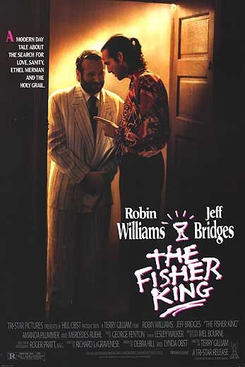

POSTS
[방구석영화제]삶에 대한 영화 - NOLF. No One Lives Forever. 누구나 알고 있는 사실입니다.
NOLF. No One Lives Forever. 누구나 알고 있는 사실입니다.
하지만 문제는 언제 죽을지 모른다는 거죠.
그런데 죽을날을 알수 있다면 어떨까요?
어떤이는 100년을 살 수도 있을 것이고
어떤이는 20년 밖에 못살 수도 있지만
S/W 프로젝트를 진행하듯 각자의 종료일에 맞춰서 To-Do와 일정계획을 만드는 겁니다.
어느 누구도 인생을 낭비하지 않을거라 상상해봅니다.
저는 70살까지 살것으로 예상하고 진행중입니다.
이제 35년 살았으니 생의 반을 쓴것이죠.
중간평가를 해보면 80점 정도 줄 수 있을 것 같습니다.
남은 반평생동안은,
35년간 했던 실수를 절대 다시 하지 않을겁니다.
35년간 못했던 것들을 모두 다 해볼겁니다.
그런데 추정 오류로 35년 후가 아닌 내일이 그날일 수도 있습니다.
그럼 프로젝트는 갑자기 미완으로 끝나는 것이죠.
하지만 인생보다 결과나 기간보다 과정이 중요한 것이 있을까요?
<삶에 대한 영화>
나 없는 내인생
모리와 함께 한 화요일 (Tuesdays With Morrie, 1999)
혐오스런 마츠코의 일생 (嫌われ松子の一生: Memories Of Matsuko, 2006)
피셔 킹 (The Fisher King, 1991)
